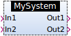
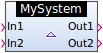
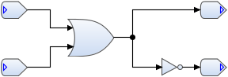
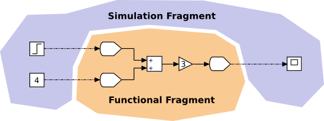
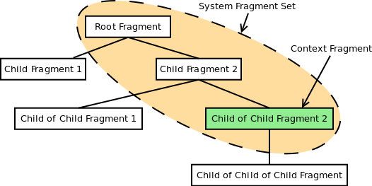
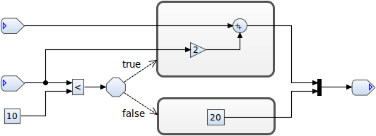
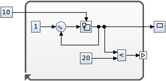
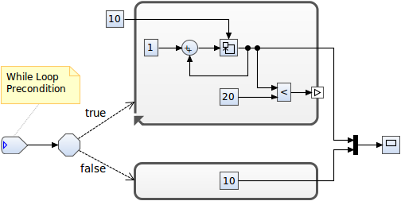
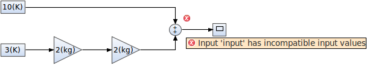

The classic way to structure large models is by dividing the system into subsystems. In contrast to other tools, subsystems are described in Damos solely through their provided system interface. On the one hand, this allows for using different subsystem implementations for a single subsystem. On the other hand, it enables the decoupling of the model that uses the subsystem and the model that realizes the subsystem (i.e. there is no model reference from the using model to the realizing model).
A system interface specifies the system inputs and outputs — so called inlets and outlets — and their data types. When adding a new subsystem to a model, the user must specify the system interface that is provided by the new subsystem. Newly added subsystems do not specify its realizing model — that is, the realizing model must be specified explicitly later on. Subsystems without a realization specification are visualized in the block diagram with a dashed border.

In order to simulate the model or to generate code, the realizing models for all subsystems must be specified. This is done by defining a subsystem realization for each subsystem, which binds the subsystem to a realizing model. When using system fragments (see next section), it is even possible to override previously defined subsystem realizations with a subsystem realization on a child fragment. Realized subsystems are visualized in the block diagram with a solid border and a triangle to the left of the subsystem name. In the case of an overridden subsystem realization, an opaque green triangle is used instead.

The model of the realizing system must contain a corresponding inport and outport for each inlet and outlet of the system interface, respectively. These inports and outports represent the interface of a system from the implementation point of view.

When modeling data flow-oriented systems, it is often desired to incorporate blocks that are used for simulation purposes only (e.g. step function blocks and scopes). These blocks are not related to the functional concern (i.e. core concern) of the model, but represent an unrelated concern that cross-cuts the model’s functional concern. In aspect-oriented programming (AOP) terminology, such cross-cutting concerns are called aspects.
Mixing cross-cutting concerns and functional concerns on the same model leads to undesired effects. For instance, imagine you need to design a process model which will later be included as a subsystem in a control loop model to simulate the behavior of a digital controller design. However, during the design of the process model you often need to add simulation-specific blocks to verify the correctness of the process model itself. Now, if you include the process model — keeping the simulation-specific blocks — as a subsystem in your digital controller design, the simulation-specific blocks on the process subsystem will likely interfere with the simulation of the overall system.
The problem is even more significant if you add simulation-specific blocks to a model which is later used to generate code from. In this case, the code generator will either generate invalid code or fail altogether because it does not know how to handle simulation-only model elements.
It becomes clear that we need a means to separate the various aspects of a system model. In Damos this can be accomplished with the concept of system fragments. System fragments are basically a grouping mechanism for blocks. For instance, if your model contains simulation-specific blocks in addition to the functional blocks, you would extract those blocks to a separate fragment.

System fragments are hierarchically structured, which is orthogonal to the subsystem hierarchy. A system model consists of exactly one root fragment and any number of child fragments (including none at all). In the example above, the functional fragment would be the root fragment and the simulation fragment its child. Since system fragments can have any number of children, different aspects of a system model can be defined in this way.
The set of system fragments which form a concrete system model is defined by the context fragment. The context fragment — which can be any fragment in the fragment hierarchy — and all its parent fragments up to the root fragment determine the set of blocks of a concrete system model. Therefore, if you need to specify a system model for simulation or code generation purposes, or when specifying the realizing system model of a subsystem, you must specify the context fragment.

As mentioned earlier, subsystem realizations, which bind subsystems to concrete implementations, are also located on system fragments. Due to the fact that they do not need to be located on the same fragment as the realized subsystem, but can be located on any child fragment, multiple realizations for a single subsystem can be defined. In this way, it is even possible to override existing subsystem realizations on parent fragments.
The main characteristic of data flow-oriented systems is that the execution of the system components is triggered by the continuous flow of data that passes through the system. Since each component is directly or indirectly connected to a source component (inports, step function blocks, etc.), you assume that each component is executed exactly once during each execution cycle. That is, all system components (with inputs) will obtain valid input data during each execution cycle.
Sometimes it is desired to execute a component or a group of components only if certain conditions are met. With data-flow oriented systems, however, you cannot simply ‘disable’ a group of components, since other components whose inputs are driven by the disabled components will not receive valid data anymore. Therefore, if your system contains components that are executed conditionally, you must provide an alternative input to the components that are driven by the conditionally executed components.
To specify conditionally executing components in Damos, you must place them in a so-called action compound. Each action compound must be linked to a Choice component, which declares the conditions at which the action compounds are executed. Since it is not allowed to connect more than one connection to an input port, a Join component must be used to merge alternative connections (the ones leaving the action compounds) back into one connection.

In the example above, two action compounds (rounded gray rectangles) are shown. The upper one is executed if the input of the Choice (octagonal figure) evaluates to true, and the lower one is executed if the Choice input evaluates to false. The dashed arrows between the Choice and the action compounds are called action links. If the action link conditions (which can be any expression) are not true and false, a default action link must be provided to ensure that in any case one action compound is executed. The Join component on the right side of the action compounds passes on the result of the Sum block (upper action) or the value 20 (lower action), depending on which action compound has been executed.
Another type of compounds that can be used in Damos are while loops. The components inside a while loop are executed as long as the while loop condition input (small rectangle on the while loop border) evaluates to true. To pass values from one iteration to the next, a Memory component can be used. The Memory component simply outputs its input value of the previous iteration; or in the case of the first iteration, the initial condition input value (top input port). While loops are executed atomically within a single time step; that is, all intermediate results are local to the while loop.

The while loop in the example above counts from 10 to 20 with an increment of 1. The final value (20) is then passed on to the input of the scope block. Hence, the resulting graph is a horizontal line with the equation y(t)=20. You may have noticed that the initial value block is located outside the while loop. This is necessary because the initial value must be available before the while loop starts.
The while loop that has been discussed so far is, in fact, a do while loop. This is because the components inside the while loop are executed at least once before evaluating the while loop condition input. Since the while loop is a specialized action compound, they can be used in place of ordinary action compounds — and in this way, real while loops can be constructed. This is illustrated in the example below.

During model editing, Damos constantly validates the compatibility of the input and output data types of connected blocks. If the data types do not match, error markers are attached to the corresponding blocks. Because data flow-oriented modeling is often used to model physical systems, quantitative values can be specified. That is, any numeric value has a unit attached to it. If no unit is specified, a dimensionless value is assumed (i.e. unit is 1). Based on the block type, Damos can then validate the compatibility of the input data types and evaluate the resulting output data types with respect to its units. The output data types are then checked against the input data types of the next block.
